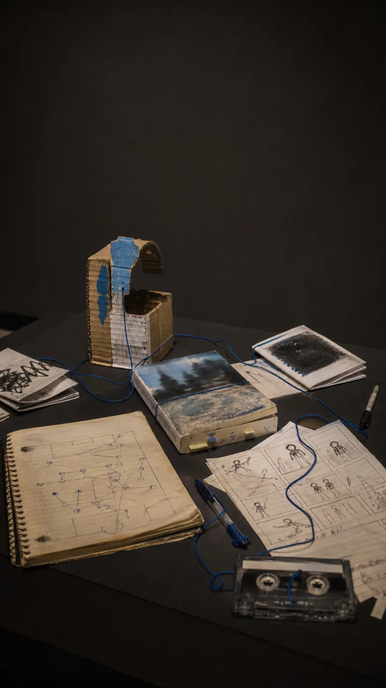

Generated illustrationThe
Amateur
What becomes possible when the work is not auditioning for anything?
Five rooms.
No career path.
This is not an argument against skill, craft, standards, or being paid. It is a narrower inquiry: what happens to attention when external evaluation stops conducting it?
A scoreboard can enter the room before the work exists.
In one archive, unscored activity is described as compounding because it leaves more room to discover. [1] reported
In Amabile's experiment with 72 young writers, an extrinsic-orientation prompt preceded poems rated less creative than those in the other conditions. [6] checked
Outside can produce a form. It can also become a cage.
Tate defines art brut as work made outside the academic fine-art tradition. [3] checked
Dubuffet valued expression he believed was less governed by convention:but his categories can also flatten the people he grouped together.
The teller narrates. The doer has already begun.
The Inner Game treats judgmental thinking and fear of failure as forms of self-interference. [5] reported
This is a coaching metaphor, not a literal anatomy of mind. Its use is practical: notice when instruction becomes obstruction.
The amateur is not the unskilled person.
Here, the amateur is the maker whose motive has not been fully outsourced to evaluation. [S] synthesis
Skill can grow. Payment can arrive. The question is whether the work still contains somewhere that is not an audition.
Keep one room in the work where nothing is auditioning.
Editorial synthesis. The evidence supports a more modest claim than “pressure is bad”: motives, evaluation, and institutions change the conditions of making. The rest is a wager.
Evidence room
Every numbered marker opens an exact source span. Personal archive excerpts were manually restricted to public-safe material.
-
The archive reports that unscored activity can feel more compounding because it creates room to discover without an objective measure.
tier A 01 stream amateur quote withheld under the quote budget; chars 737–938 of the source
-
By the late eighteenth century, amateur could mean someone who participated without pursuing the activity professionally or for gain.
tier B 02 amateur etymology
one who cultivates and participates (in something) but does not pursue it professionally or with an eye to gain
-
Tate defines art brut as art made outside the academic tradition of fine art.
tier A 04 art brut
art such as graffiti or naïve art which is made outside the academic tradition of fine art
-
The English word 'amateur' descends from a word meaning lover.
tier B 02 amateur etymology
one who loves, lover
-
The Inner Game presents judgmental thinking and fear of failure as forms of self-interference.
tier B 05 inner game quote withheld under the quote budget; chars 208–403 of the source
-
In Amabile’s 1985 experiment with 72 young writers, poems produced after an extrinsic-orientation prompt were rated less creative than poems in the other two conditions.
tier A 03 amabile creativity
Poems written under an extrinsic orientation were significantly less creative than those written in the other two conditions.
- The author's inferences, recorded here and cited nowhere, because there is no source to cite.
-
The useful meaning of amateur here is not unskilled; it is work whose motive has not been fully outsourced to evaluation.